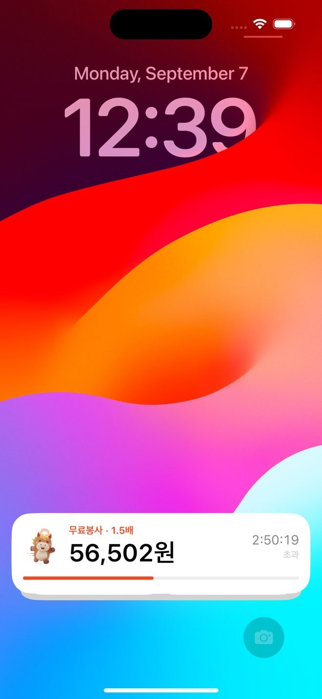
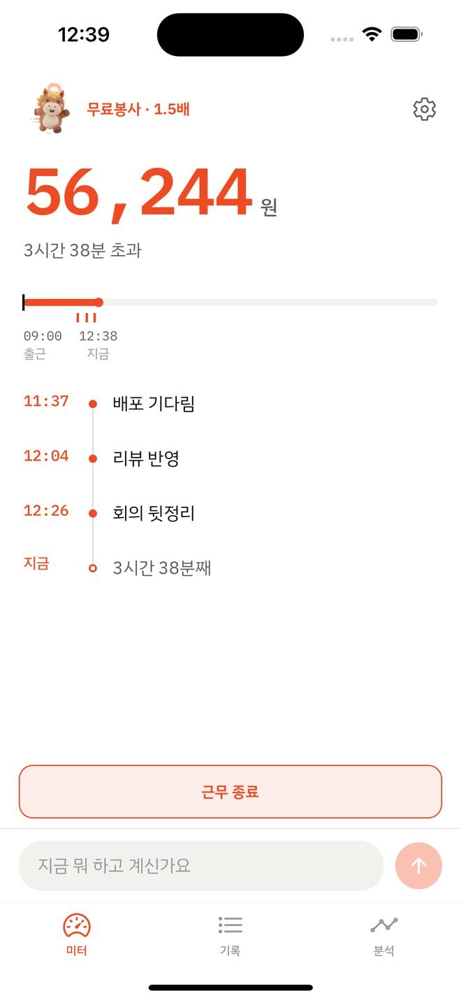
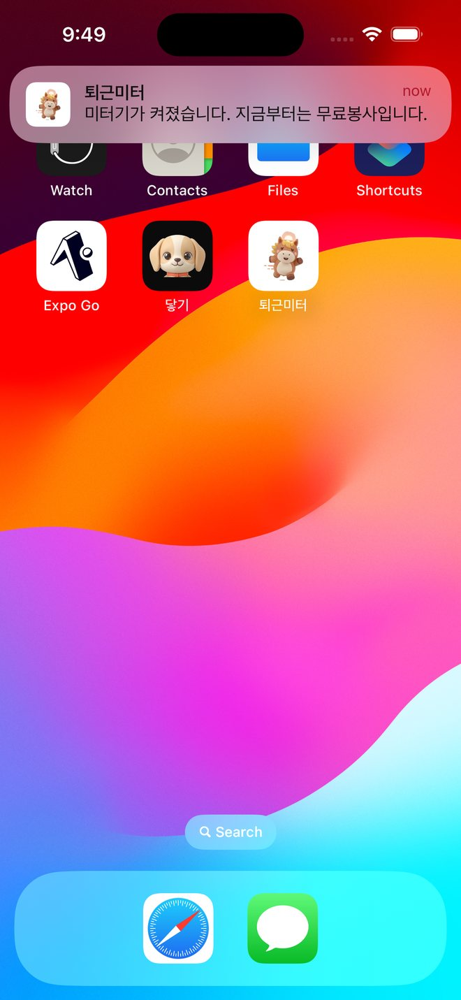
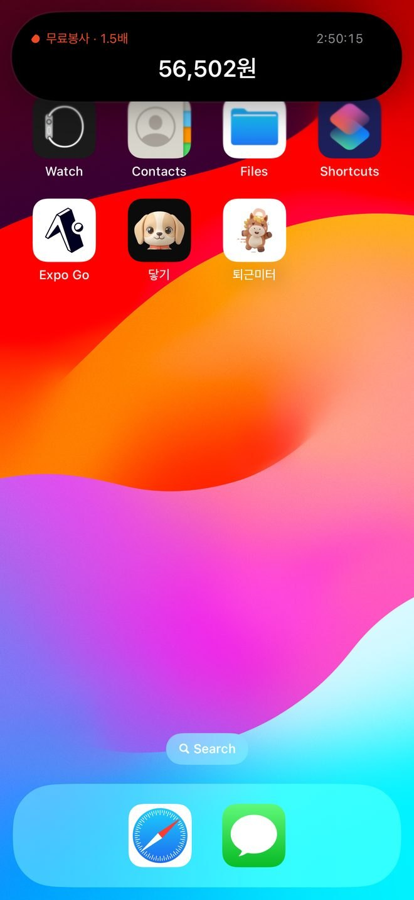
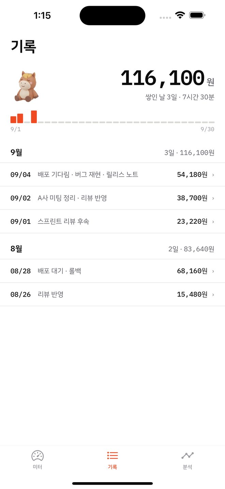
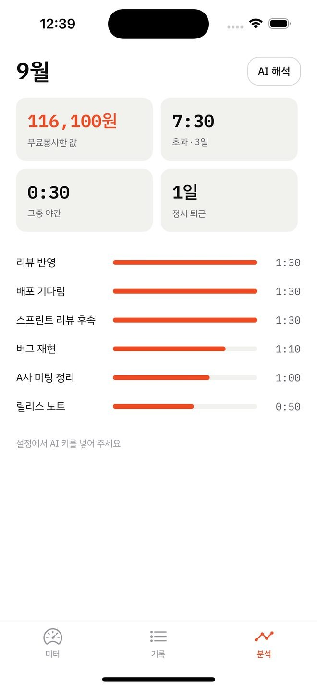
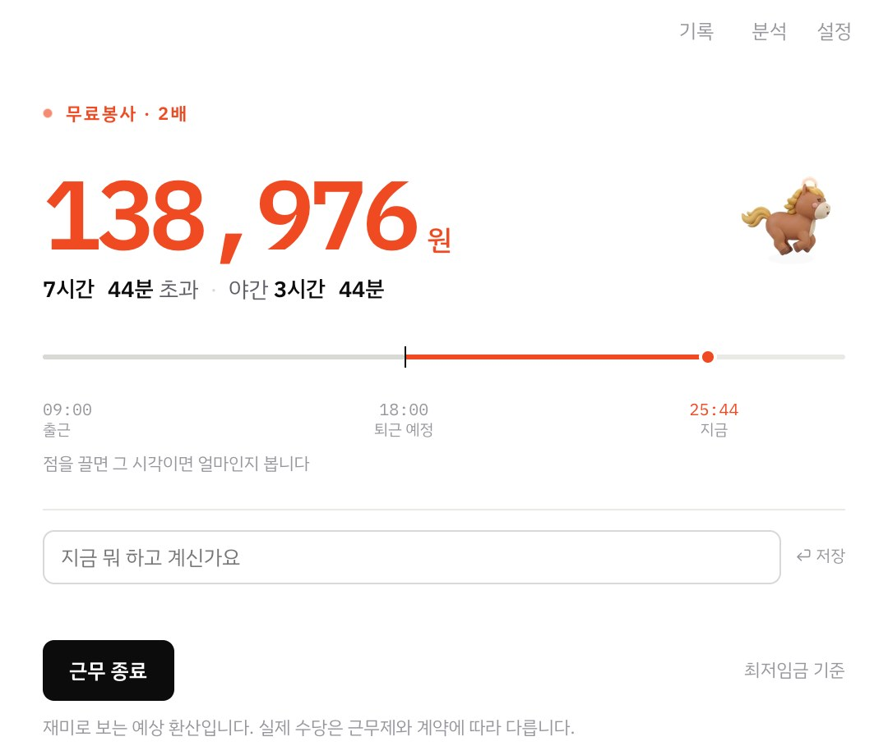

택시 미터기처럼, 켜져 있는 동안 계속 올라갑니다. 근로기준법 가산율을 분 단위로 적용해 2026년 최저임금으로 환산합니다. 연봉은 묻지 않습니다.
iOS 15.1 이상 · 계정 없음 · 기록은 이 기기에만 · 무료

일한 시간은 이미 지나갔습니다.
얼마였는지는 볼 수 있습니다.
어떻게 세는가
근로기준법 제56조는 연장·야간·휴일에 각각 50%를 더하라고 합니다. 겹치면 함께 붙습니다. 22시 경계를 통째로 처리하면 21시부터 23시까지 일한 두 시간이 틀리므로, 1분씩 끊어 그 분이 어디에 속하는지 보고 더합니다.
퇴근 예정을 넘긴 시각부터.
연장에 야간이 겹칩니다. 자정을 넘겨도 이어집니다.
셋이 모두 겹치는 자리입니다.
2026년 최저임금 10,320원 기준 · 분당 258원 / 344원 / 430원 · 근무일 경계는 자정이 아니라 05:00 이라 새벽 2시는 26:00 으로 적힙니다
낮에도
한 줄 남기면 그 시각에 핀이 박힙니다. 나중에 채워도 됩니다. 네 시간을 한 가지 이유로 적을 수는 없으니, 하는 일이 바뀔 때마다 남기면 구간이 저절로 나뉩니다.
캘린더를 붙이면 낮에 회의가 얼마나 있었는지도 같이 셉니다. 비공개 iCal 주소를 읽기만 하고 쓰지 않습니다.
캘린더 앱의 공유 메뉴에서 곧장 넘길 수도 있습니다. 주소를 복사해 붙이지 않아도 됩니다.

알림
10분 전과 정각에 한 번씩. 넘긴 뒤에는 30분마다 지금 얼마인지 알려줍니다. 켜 둔 것만 오고, 끄면 그날부터 오지 않습니다.
앱을 열어 두지 않아도 됩니다. 알림은 기기가 시각에 맞춰 띄우는 것이라 꺼져 있어도 옵니다.

잠금화면
잠금화면과 다이내믹 아일랜드에 금액이 올라갑니다. 경과 시간과 진행 막대는 기기가 스스로 세므로 앱이 꺼져 있어도 초 단위로 맞습니다.
금액은 앱이 미리 계산해 둔 봉투를 서버가 시각에 맞춰 부칩니다. 서버는 계산하지 않고, 시급도 모릅니다.
잠금화면과 다이내믹 아일랜드는 iOS 16.2 이상에서 보입니다. 금액은 5분마다 따라갑니다 — 경과 시간은 초 단위로 정확합니다.

기록
근무를 마치면 그날이 하루로 저장됩니다. 시각과 금액만이 아니라 그때 남긴 한 줄이 함께 남아서, 한 달 뒤에 봐도 왜 늦었는지가 읽힙니다.
달력에는 정시에 나간 날도 같이 표시됩니다. 야근한 날만 세면 실제보다 나빠 보이기 때문입니다.

분석
시간과 금액은 AI가 만지지 않습니다. 비슷한 사유를 묶고 두세 문장으로 정리하는 데까지가 AI의 일입니다. 묶음의 이름도 본인이 쓴 말에서만 나옵니다. 없던 말이 붙으면 자기 기록으로 읽히지 않기 때문입니다.
AI를 켜지 않아도 숫자는 전부 보입니다.

원칙
시급을 알면 시급 × 12 × 209 로 연봉이 나옵니다.
시급을 화면에서 지워도 금액과 시간이 나란히 있으면 나눗셈 한 번이면 됩니다.
기준을 누구나 아는 공개 상수로 두어 그 경로를 막았습니다.
로그인도 회원가입도 없습니다.
남긴 말과 지난 기록은 기기를 떠나지 않습니다.
설정에서 기록을 통째로 내보내고 새 기기에서 붙여 넣으면 그대로 섭니다. 계정이 없으니 옮기는 일도 본인이 합니다.
화면 기록도, 위치도, 접근성도 쓰지 않습니다.
서버가 하는 일은 셋뿐입니다 — 웹에서 캘린더를 대신 받아 오기 · AI 호출 넘기기 · 잠금화면 알림 부치기. 자세한 것은 개인정보 처리방침에 적었습니다.
맥에서도
누르면 떠 있는 미터가 나옵니다. 창을 닫아도 시계는 돕니다. 웹에서도 같은 화면을 같은 계산으로 볼 수 있습니다.
